A tymczasem w Cameracie...
.
2012-01-29
Spotykamy się już tradycyjnie w Szkole Muzycznej. Mróz siarczysty dzisiaj, więc rozgrzewka i rozśpiewka równocześnie. Prześpiewaliśmy kilka kolęd i zbieramy się do wyjazdu.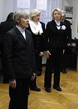 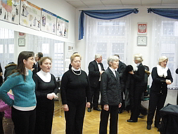 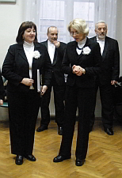
Autokar czeka. Razem z nami jedzie chór szkolny. Wsiadamy i jedziemy do Gdowa, gdzie jak co roku, odbędzie się msza i po mszy koncert kolęd.
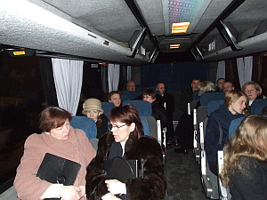 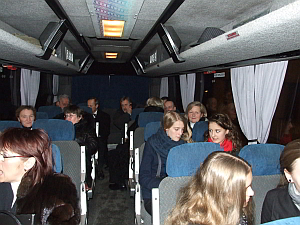
Występują cztery chóry:- chór Szkoły Muzycznej I stopnia w Wieliczce pod dyr. Izabeli Szoty
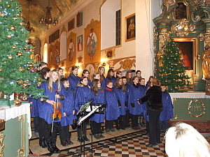 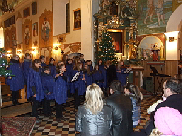
- chór Państwowej Szkoły Muzycznej I stopnia w Gdowie pod dyr. Elżbiety Gawryszewskiej
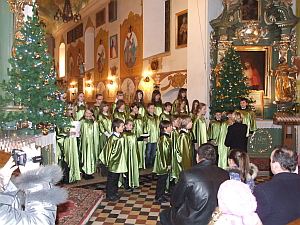
- chór Camerata z Wieliczki pod dyr. Izabeli Szoty
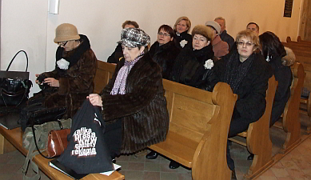 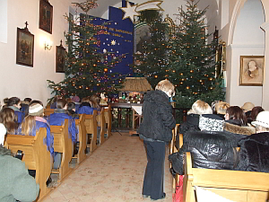
- chór „Tutte de Corde” z Centrum Kultury w Gdowie pod dyr. Elżbiety Gawryszewskiej
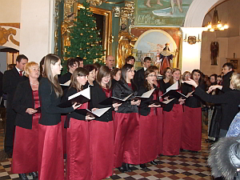 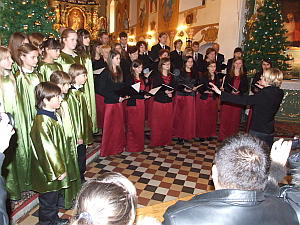
Wszystkie chóry kolejno śpiewały kolędy podczas mszy. Po mszy odbył się koncert kolęd w wykonaniu chórów. Każdy zaśpiewał po trzy kolędy, a na koniec wszystkie razem zaśpiewały dwie kolędy, zapraszając wszystkich słuchaczy do śpiewania.Całość prowadził dyrektor Państwowej Szkoły Muzycznej I stopnia w Gdowie pan Adam Czyżowski.
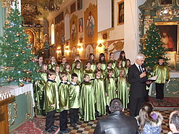

© Stowarzyszenie Muzyczne Chór Camerata Wieliczka